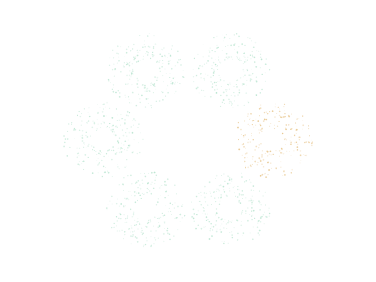

Georgia Institute of Technology
Generative models, sport,and life with two huskies.研究之外，还有球场、骑行和两只哈士奇。

I study generative modelsand the probability behind them.
Research, motion, and life away from the desk.
I am an undergraduate at Georgia Tech studying Mathematics and Industrial and Systems Engineering.
Research first, with a clear and quiet presentation.